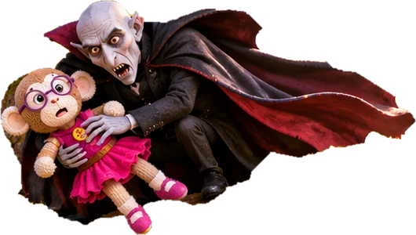
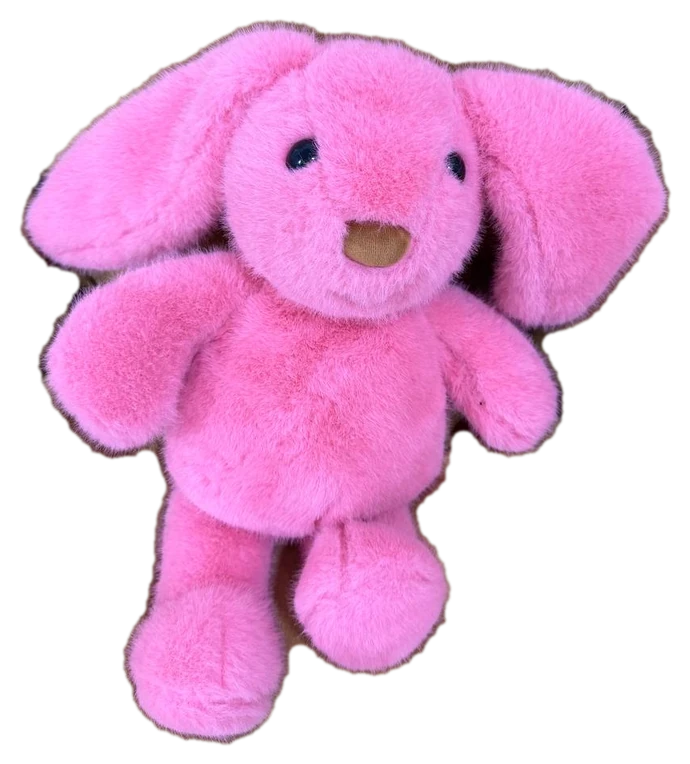

Носферату похитил Умняшку!
Он подхватил её и забрался на старый дуб! Кот и заяц помогут нам спасти подругу. Сначала найди пять жёлудей.
Читай подсказки про места: ПОД, ЗА, ПЕРЕД, В и НАД.
Жёлуди◌ ◌ ◌ ◌ ◌
ЛАДАБУРГ · ДУБОВЫЙ КВАРТАЛ
Спасательная операция!
Умняшка в руках у вампира. Сумеешь найти пять жёлудей и прогнать Носферату?
💗 Все снова вместе!
Умняшка спасена! Лада, кот, заяц и обезьянка крепко обнимаются. Теперь отряд готов к путешествию к Аиду.